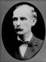

FORMER JUDGES
Judge Francis Marion Thompson
Francis Thompson was born in Ripley County, Indiana on July 12, 1857. He was a
School teacher in Ripley County from age 17 to 22, attending collage during summer
breaks. He began studying law in 1881 in the offices of William and Charles Willson in
Versailles. In 1883, he married in Ripley County to Linda Harper, with whom he would
have five children.
In 1887, he left Indiana to practice in Kansas and Colorado, returning in 1891. In 1894
he was elected prosecuting attorney for Ripley, Jennings and Scott counties, and he
served for one term. He again served one term in public office when in 1906 he was
elected judge of the circuit court of Ripley and Jennings County.
In 1924, Judge, Thompson was elected as a Republican to the Indiana Appellate Court
and served for one four-year term. He was Chief Judge for the court’s May 1927 session.
He was a Mason, a knight of Pythias, and a member of the Methodist Episcopal Church.
the Columbia Club, and the American, Indiana State and Ripley County bar associations.
He died in Versailles, Indiana on February 18, 1936.
School teacher in Ripley County from age 17 to 22, attending collage during summer
breaks. He began studying law in 1881 in the offices of William and Charles Willson in
Versailles. In 1883, he married in Ripley County to Linda Harper, with whom he would
have five children.
In 1887, he left Indiana to practice in Kansas and Colorado, returning in 1891. In 1894
he was elected prosecuting attorney for Ripley, Jennings and Scott counties, and he
served for one term. He again served one term in public office when in 1906 he was
elected judge of the circuit court of Ripley and Jennings County.
In 1924, Judge, Thompson was elected as a Republican to the Indiana Appellate Court
and served for one four-year term. He was Chief Judge for the court’s May 1927 session.
He was a Mason, a knight of Pythias, and a member of the Methodist Episcopal Church.
the Columbia Club, and the American, Indiana State and Ripley County bar associations.
He died in Versailles, Indiana on February 18, 1936.
